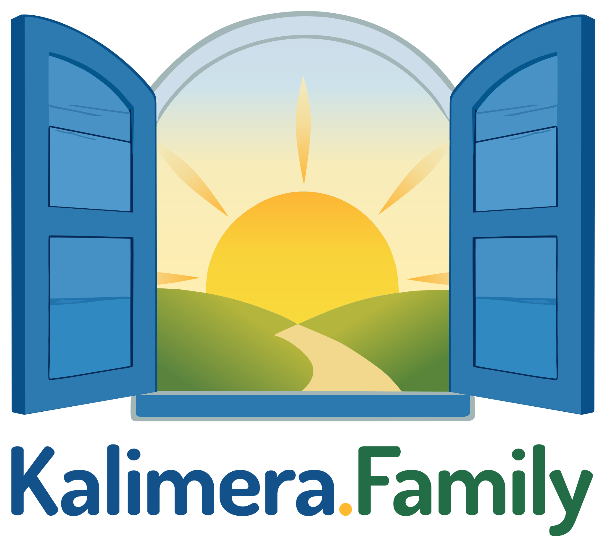

A private voice assistant that anyone can use
Made first for older people, and for anyone who finds small text, long answers or typing hard. In your own language, on an ordinary phone: one big button, short answers read aloud in large letters, and calm help in an emergency. The voice never leaves the phone.
Demo only. No AI model runs behind this website, so it does not give real answers: the replies you see are prepared examples. Emergency, health and scam texts are drafts that have not yet been reviewed by doctors, emergency services or native speakers. In an emergency, always call 112 (or your local number) yourself.

The idea
My mother is over 70. She asked a popular AI assistant a simple question and got about 1,800 characters back. She got lost halfway and gave up. She needed short answers, large text and her own language, without her questions going to a cloud.
Kalimera Family is built for her and for people like her. Kalimera means "good morning" in Greek. The app answers in one to three short sentences, reads them aloud and shows them in large letters.
Who it is for
- Older people at homeLiving alone or with a partner, who want a simple helper that speaks their language.
- Care homesA shared hub can give every resident's phone a larger open model, still inside the home.
- Families far awayWho worry about their parents and want them safe from scams and helped in an emergency.
What it does
- Speak or typeOne big Speak button, or type the question. Conversation mode keeps listening for a back-and-forth talk.
- Short answersOne to three sentences, read aloud and shown as a large caption.
- Emergency help"I fell down" or "my chest hurts" gets a fixed, calm reply at once; no AI model is asked. One button opens Call 112, your own contacts and printable help cards.
- Scam warningsShort stories about common scams (a fake bank call, a "grandchild in trouble", a fake police officer), read aloud.
- Knowledge cardsPrepared answers for everyday questions on health, daily life and safety, so they are not invented by a model.
- Name days"Whose name day is it today?" answered offline from a calendar for each country.
- Memory you controlNothing is remembered until the person agrees. "What do you remember about me?" and "Forget everything" work by voice.
- LanguagesPolish, English, German and Romanian; Greek is being improved. The country sets the emergency numbers and local content.
See how it works
A short tour of the app's real screens, running in your browser. Press a step, or play the whole tour. You can use the phone yourself at any time.
Demo only: no AI model behind it. The phone below does not hear you and does not work out answers. Speak plays a prepared example question, and a typed question gets a prepared reply. For real answers, install the Android test app: there, speech recognition and the AI model run on the phone itself.
In this web demo every AI answer is a prepared example. The emergency card, the help screen, the scam stories and the settings are the app's real content. On the phone, speech recognition and answers run on the device itself. The demo is set to English, United Kingdom.
Two looks, more on request
Each look has a light and a dark screen and is chosen in Settings → Look of the app. Every look keeps the same colour for the same meaning: blue for Speak, green for Conversation, red for emergency help and scams. Other looks can be made on request, for example in a care home's own style, without changing how the app works.
See it on a phone
One question about heavy bleeding on a Galaxy A37: the fixed Bleeding card opens at once and is read aloud. App sound only.
How it works
- Listening on the phone. Speech recognition (Whisper small) runs on the device. The voice is never sent anywhere.
- Fixed steps first. Emergency phrases, the clock, knowledge cards, scam warnings and sourced facts answer about half of all questions, without any AI model.
- A small open model on the phone. Gemma, or Bielik for Polish, answers the rest in one to three sentences. When it has no source, it says so instead of guessing.
- Optional care-home hub. A larger open model on a box inside the care home, never a cloud service.
Built on open models and tools: Whisper and whisper.cpp, Gemma, Bielik, llama.cpp, Pocket TTS, Capacitor and Svelte. Full credits and licences.
Privacy
- The voice never leaves the phone.
- No account: no name, e-mail, phone number or card is asked for.
- Nothing is remembered until the person agrees, and "Forget everything" deletes it all.
- Nothing is used to train AI models.
- No advertising, no data sold.
Where it stands
- Working Android and iPhone apps, tested on a mid-range Galaxy A37 and an iPhone.
- First user: my mother (Polish); a Greek reviewer and Romanian and German testers help.
- A shared hub for care homes, built and load-tested.
- Next: expert and native-speaker review of all safety and health content, natural voices for every language, and pilots in homes and care homes in 2027.
Contact
Questions, a pilot in a care home, a translation or a look in your own style: please write through the Contact Us form at the bottom of the AlmostCyb.org page.
Contact us at AlmostCyb.org